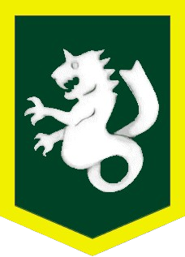
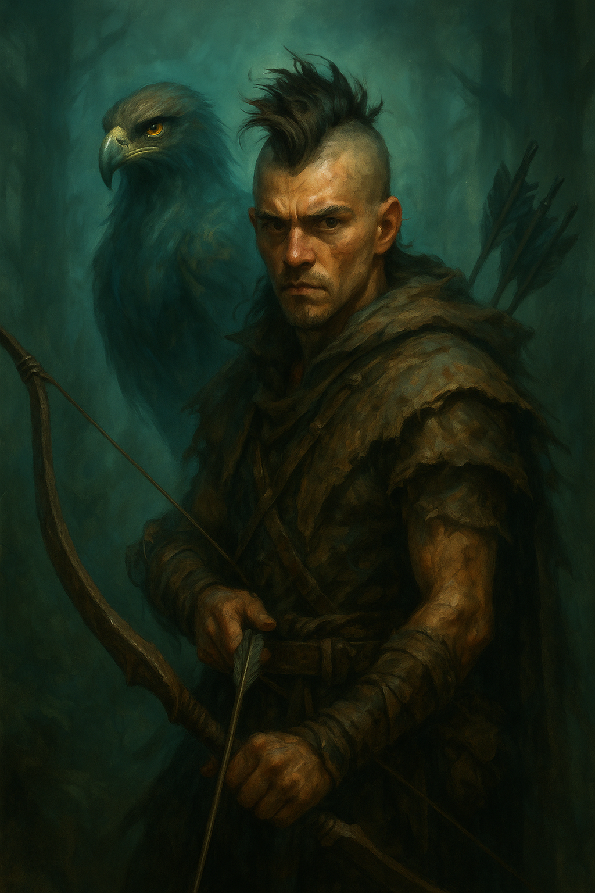

Beastbane Syndicate

Huntsmen
Quinn Fintch

Kunai x4
theres a drop sown here now?
-
Hide Shirt
Light Armor - Armor Bonus +3
-
Sling
Damage 1d3 (small), 1d4 (medium) Critical x2 Type bludgeoning. Range Increment 50 ft. (projectile). You can hurl ordinary stones with a sling, but stones are not as dense or as round as bullets. Thus, such an attack deals damage as if the weapon were designed for a creature one size category smaller than you and you take a –1 penalty on attack rolls.
-
Wand of Cure Light Wounds
The wand restores 1d8+1 Hit Points. Does not heal those healed by negative energy. Charges Left 70
-
Healing Potion (Minor) x2
The potion restores 1d8 Hit Points.
Traits and Feats
-
Reactionary
Trait: You gain a +2 Bonus on Initiative checks
-
Indomitable Faith
Trait: You gain a +1 Bonus on Will saves
-
Point Blank Shot
Combat: You get a +1 bonus on attack and damage rolls with ranged weapons at ranges of up to 30 feet.
-
Alertness
When fused with Hedgehog: You get a +2 bonus on Perception and Sense Motive skill checks. If you have 10 or more ranks in one of these skills, the bonus increases to +4 for that skill.
-
Precise Shot
Combat: You can shoot or throw ranged weapons at an opponent engaged in melee without taking the standard –4 penalty on your attack roll.
Backstory